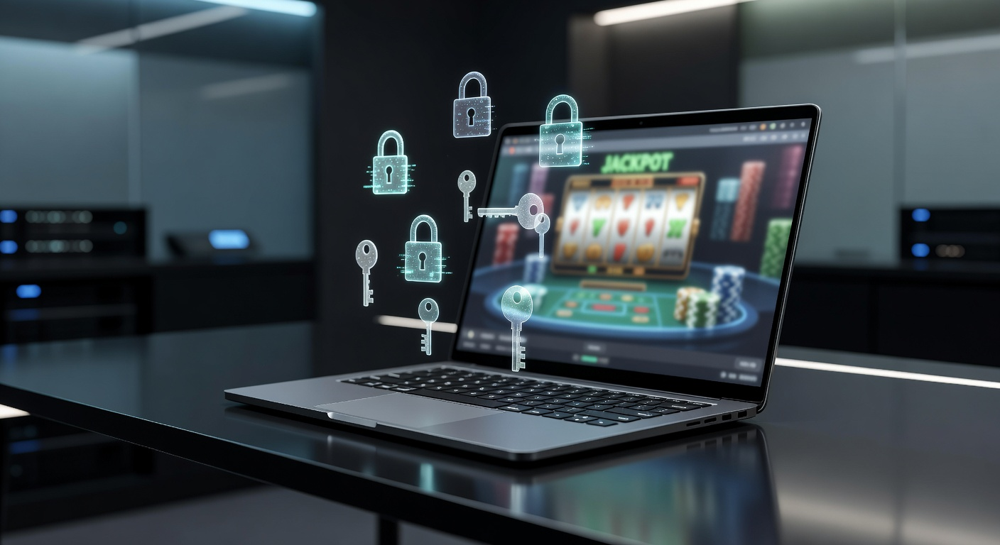
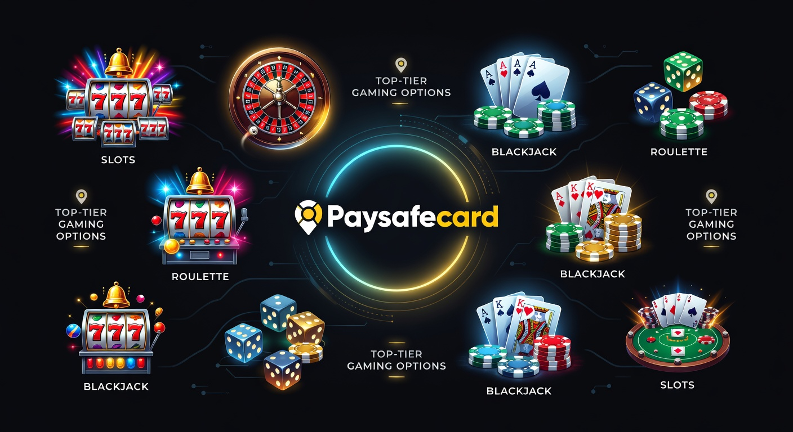
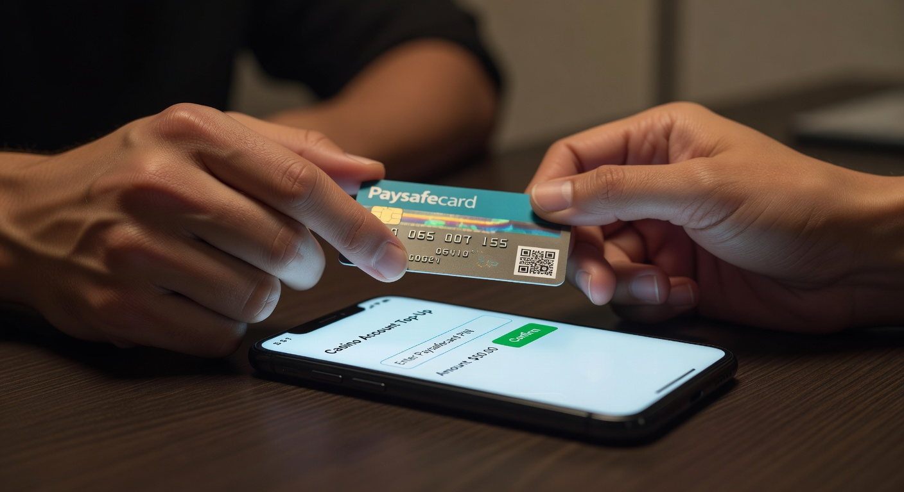
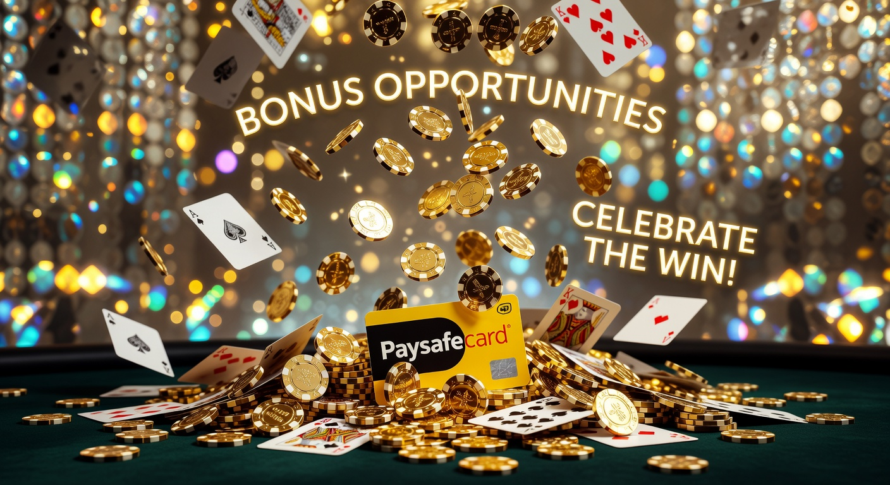
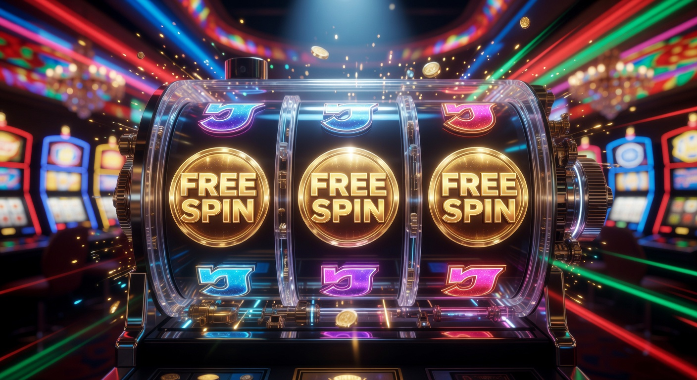

Migliori casinò online con paysafecard senza documento
Nel panorama del gioco d'azzardo digitale del 2026, la ricerca della privacy e della velocità operativa è diventata la priorità assoluta per migliaia di utenti italiani. Trovare i migliori casinò online con paysafecard senza documento non è solo una questione di comodità, ma una scelta strategica per chi desidera separare la propria attività ludica dal controllo bancario diretto. In un'epoca in cui la tracciabilità dei dati è onnipresente, l'utilizzo di una soluzione prepagata come Paysafecard, abbinata a piattaforme che posticipano la verifica dell'identità, rappresenta la massima espressione di libertà digitale.
La flessibilità offerta da questi operatori permette di iniziare l'esperienza di intrattenimento in pochi secondi. Molti utenti cercano specificamente un casino 5 euro deposito per testare la piattaforma senza rischi eccessivi. La tecnologia delle piattaforme nel 2026 ha raggiunto vette tali da garantire transazioni istantanee e una sicurezza crittografica che rende quasi obsoleti i vecchi sistemi di controllo invasivi. In questa guida esploreremo ogni dettaglio tecnico e legale per navigare in totale sicurezza in questo settore in forte espansione.
Perché scegliere un casinò che accetta Paysafecard
L'adozione di questo sistema di ricarica è cresciuta esponenzialmente negli ultimi dodici mesi. Il motivo risiede nella natura stessa del voucher: un codice PIN a 16 cifre che non richiede l'inserimento di dati sensibili sulla piattaforma di gioco. Quando cerchiamo i migliori casinò online con paysafecard senza documento, puntiamo a siti che valorizzano il tempo dell'utente. Non dover scansionare la propria carta d'identità solo per fare una prima partita è un vantaggio competitivo che distingue i leader del settore dai vecchi portali burocratici.
Anonimato e protezione della privacy
La protezione dei dati personali è diventata un diritto fondamentale nel 2026. Utilizzando il pagamento paysafecard online, non si lasciano tracce dell'estratto conto bancario collegate a siti di scommesse o slot machine. Questo è cruciale per chi desidera mantenere un profilo discreto presso i propri istituti di credito. I migliori casinò online con paysafecard senza documento garantiscono che il flusso finanziario rimanga separato dalla propria identità civile fino al momento in cui non si decida di effettuare prelievi di entità significativa.
Secondo le analisi di Wikipedia sulla sicurezza delle transazioni, il sistema di voucher rimane uno dei più sicuri al mondo contro il furto di identità. Non essendoci una carta di credito collegata direttamente al conto di gioco, il rischio di frodi informatiche si riduce praticamente a zero. Questa caratteristica rende tali piattaforme ideali per chi naviga in contesti digitali dove la protezione della privacy è spesso messa a dura prova.
Velocità nelle transazioni di deposito
La rapidità è l'altro pilastro fondamentale. Nei migliori casinò online con paysafecard senza documento, il deposito avviene in tempo reale. Una volta inserito il PIN, il saldo viene aggiornato istantaneamente, permettendo di accedere subito alle sale live o ai tornei di slot. In un mercato IT estremamente dinamico come quello attuale, attendere ore per la convalida di un documento è considerato un disservizio inaccettabile dai giocatori più esigenti.
Come funzionano i casinò senza invio immediato dei documenti

È importante fare chiarezza sulla terminologia: "senza documento" non significa che la verifica non avverrà mai, ma che è differita. Questi portali sfruttano le licenze internazionali, come quelle fornite dalla Malta Gaming Authority o da Curaçao eGaming, che permettono di giocare e depositare immediatamente. La procedura di KYC (Know Your Customer) viene solitamente richiesta solo in fase di prelievo di grosse somme, permettendo un accesso rapido al catalogo ludico.
Questa agilità burocratica attrae specialmente gli appassionati di slot senza documenti, che preferiscono la velocità all'eccessivo controllo preventivo. Le piattaforme moderne nel 2026 integrano algoritmi di verifica automatizzata che possono confermare l'età dell'utente tramite database pubblici senza richiedere caricamenti manuali di file pesanti, rendendo l'esperienza fluida e priva di intoppi tecnici.
Classifica dei siti top per giocare con Paysafecard

Abbiamo testato decine di operatori per identificare i migliori casinò online con paysafecard senza documento attivi in Italia nel 2026. La nostra selezione si basa sulla sicurezza, la varietà di giochi e la generosità delle promozioni.
| Brand | Bonus Principale | Caratteristica Top | Link Sicuro |
|---|---|---|---|
| Millioner | 100% fino a 500€ | Interfaccia Next-Gen | Vai a Millioner |
| Roulettino | 200 Giri Gratis | Prelievi Ultra-Rapidi | Vai a Roulettino |
| Wyns | Bonus fino a 1000€ | Vasta gamma di Slot | Vai a Wyns |
| Kinbet | Bonus Scommesse + Casinò | Sito Multi-Prodotto | Vai a Kinbet |
| Dragonia | Bonus Crab + 100% | Gamificazione Unica | Vai a Dragonia |
Questi operatori si distinguono per l'affidabilità. Ad esempio, Millioner ha rivoluzionato il concetto di user experience nel 2026, offrendo un'app dedicata estremamente leggera. Roulettino si concentra sugli amanti dei classici, mentre Dragonia introduce meccaniche innovative come il Bonus Crab, una funzione interattiva che permette di pescare premi extra ogni giorno, aumentando drasticamente il coinvolgimento dell'utente.
Recensione dei migliori operatori internazionali
Analizzando nel dettaglio i migliori casinò online con paysafecard senza documento, notiamo come brand come Wildtokyo Casinò e Astromania Casinò stiano scalando le classifiche di gradimento. Il primo è celebre per la sua estetica cyberpunk che si sposa perfettamente con l'ambiente IT moderno, mentre astromania casino offre un'ambientazione spaziale con bonus progressivi che premiano la fedeltà a lungo termine. Entrambi accettano Paysafecard senza imporre commissioni occulte sui depositi.
Anche Diva Spin Casinò e Lunubet Casinò meritano una menzione per la loro eccellenza nel supporto clienti in lingua italiana. In un mercato globale, avere un interlocutore che parla la nostra lingua h24 è un fattore di sicurezza non trascurabile. Questi siti web garantiscono che ogni transazione effettuata tramite voucher sia tracciata e protetta da sistemi di crittografia a 256 bit, lo standard aureo della sicurezza informatica nel 2026.
Criteri di selezione della nostra redazione
Per definire quali siano i migliori casinò online con paysafecard senza documento, applichiamo un protocollo di analisi rigoroso. Non ci limitiamo a guardare il valore estetico del sito web, ma scaviamo nei termini e condizioni. Verifichiamo la validità delle licenze rilasciate da enti come la UK Gambling Commission o l'ente regolatore di Curaçao eGaming. Se un operatore non rispetta i tempi di pagamento o ha clausole vessatorie, viene immediatamente escluso dalle nostre raccomandazioni.
- Presenza di protocolli SSL aggiornati per la protezione dei dati.
- Varietà del catalogo giochi, includendo provider come NetEnt, Evolution e Pragmatic Play.
- Equità dei requisiti di scommessa (wagering) sui bonus offerti.
- Efficacia del servizio di assistenza clienti, testato via chat e email.
- Compatibilità mobile totale senza necessità di software obsoleti.
Guida passo-passo: come ricaricare il conto di gioco

Utilizzare questo strumento nei migliori casinò online con paysafecard senza documento è un'operazione che richiede meno di tre minuti. La semplicità è il cuore del successo di questa prepagata. Molti nuovi utenti si avvicinano al mondo del gioco online proprio grazie alla facilità d'uso di questi PIN, che possono essere acquistati fisicamente in migliaia di punti vendita o tramite canali digitali ufficiali.
Acquisto del PIN e registrazione
Il primo passo consiste nell'ottenere il codice. È possibile recarsi in una tabaccheria o in un supermercato abilitato, oppure utilizzare le app ufficiali per l'acquisto del pagamento paysafecard online. Una volta in possesso del PIN, bisogna scegliere uno dei migliori casinò online con paysafecard senza documento dalla nostra lista e procedere alla creazione del profilo. La registrazione richiederà solo email, nome utente e una password sicura, senza costringerti a caricare subito foto dei tuoi documenti.
Inserimento del codice nel pannello utente
Dopo il login, dirigiti alla sezione "Cassa" o "Deposito" del sito web. Seleziona Paysafecard tra le opzioni disponibili. Inserisci l'importo desiderato — ricorda che molti cercano un casino paysafecard 5 euro per iniziare con moderazione — e digita le 16 cifre del PIN. Una volta confermato, il sistema verificherà il codice in tempo reale e caricherà il credito sul tuo conto di gioco, permettendoti di iniziare immediatamente la tua sessione tra slot, poker o roulette live.
Bonus e promozioni disponibili per chi usa prepagate

Un mito da sfatare è che i migliori casinò online con paysafecard senza documento escludano questo metodo dai bonus. Nel 2026, la maggior parte delle piattaforme internazionali include Paysafecard tra i sistemi validi per attivare le offerte promozionali. Questo significa che puoi ricaricare in anonimato e ricevere comunque il raddoppio del versamento o pacchetti di giri gratuiti sulle slot più popolari del momento.
Le promozioni variano da operatore a operatore. Ad esempio, su Spinempire Casinò o Boomerangbet Casino, è frequente trovare bonus ricarica settimanali specifici per chi utilizza metodi di deposito alternativi alle carte di credito tradizionali. Queste offerte sono fondamentali per massimizzare il tempo di gioco e le possibilità di vincita, mantenendo sempre una gestione oculata del proprio bankroll.
Giri Gratis senza documenti

La promozione più ambita dagli utenti italiani nel 2026 rimane quella dei "Free Spins" o giri gratis. Molti dei migliori casinò online con paysafecard senza documento offrono pacchetti di giri gratuiti al momento del primo deposito con voucher. Questa è un'ottima opportunità per esplorare nuove slot senza toccare il credito reale appena versato. Piattaforme come VegasHero Casinò e Wonderluck Casinò sono rinomate per la frequenza con cui distribuiscono questi omaggi.
È fondamentale, tuttavia, leggere sempre i "T&C" (Termini e Condizioni). Anche nei migliori casinò online con paysafecard senza documento, le vincite derivanti dai giri gratis possono essere soggette a requisiti di giocata. Solitamente, una volta soddisfatto il wagering, il credito bonus viene convertito in denaro reale prelevabile, rendendo i giri gratis un vero e proprio volano per aumentare le proprie probabilità di successo iniziale.
Bonus benvenuto
Il bonus di benvenuto rappresenta il biglietto da visita di ogni piattaforma. Nei migliori casinò online con paysafecard senza documento, queste offerte possono raggiungere cifre considerevoli, spesso superando i 1000€ per i nuovi iscritti. Brand consolidati come 888Casino, WinBet e Winamax competono ferocemente per attirare nuovi utenti offrendo percentuali di ricarica molto alte e condizioni di sblocco sempre più favorevoli per il giocatore.
Un esempio di eccellenza è l'offerta di Dragonia, che combina un generoso bonus sul primo deposito con la possibilità di utilizzare il Bonus Crab, aggiungendo un elemento di divertimento extra. La trasparenza è fondamentale: i migliori casinò online con paysafecard senza documento espongono chiaramente come riscattare il bonus, evitando brutte sorprese in fase di incasso delle vincite. Assicurati sempre che il sito web scelto sia tra quelli verificati dalla nostra redazione per evitare problemi di riscossione.
Limiti di spesa e commissioni previste
Uno degli aspetti tecnici più rilevanti nell'utilizzo di Paysafecard riguarda i massimali. Generalmente, un singolo voucher ha un limite di 100€, ma è possibile cumulare più PIN per ricariche di entità superiore. I migliori casinò online con paysafecard senza documento non applicano commissioni sul deposito, rendendo l'intero valore acquistato disponibile per le puntate. Questo è un vantaggio netto rispetto ad altri sistemi che potrebbero trattenere piccole percentuali per l'elaborazione del pagamento.
Per quanto riguarda i prelievi, essendo Paysafecard un metodo principalmente unidirezionale (deposito), i migliori casinò online con paysafecard senza documento offriranno solitamente il bonifico bancario o i portafogli elettronici come alternativa per riscuotere le vincite. È proprio in questa fase che potrebbe essere richiesta la verifica tramite documento, in conformità con le normative internazionali anti-riciclaggio stabilite dall'ADM (Agenzia delle Dogane e dei Monopoli) e da altri enti regolatori globali.
Vantaggi e svantaggi di questo metodo di pagamento
Scegliere di operare nei migliori casinò online con paysafecard senza documento comporta un'analisi ponderata tra benefici e limitazioni. In ambito IT, sappiamo che non esiste una soluzione perfetta per tutti, ma esistono soluzioni ottimali per specifiche esigenze di privacy e velocità.
- Vantaggi: Anonimato quasi totale, controllo ferreo del budget (non si può spendere più di quanto caricato sul voucher), transazioni istantanee, protezione contro il furto di dati bancari.
- Svantaggi: Difficoltà nell'effettuare prelievi diretti sullo stesso metodo, necessità di acquistare fisicamente o digitalmente i PIN, limiti massimi di deposito per singola transazione più bassi rispetto ai bonifici.
Nonostante questi piccoli ostacoli, i casino sicuri paysafecard rimangono la scelta prediletta per chi vuole giocare senza pensieri e senza dover condividere troppi dettagli personali con il sito web di turno. La sicurezza di sapere che le proprie informazioni finanziarie non risiedono sul database del casinò è, per molti, un valore inestimabile.
Alternative sicure a Paysafecard in Italia
Se per qualche motivo non fosse possibile utilizzare questo voucher, esistono altre strade per giocare nei migliori casinò online con paysafecard senza documento o in piattaforme simili che garantiscono elevati standard di riservatezza. Il mercato dei pagamenti digitali nel 2026 offre opzioni tecnologicamente avanzate che competono direttamente con i sistemi tradizionali.
Criptovalute per il massimo anonimato
L'uso di Bitcoin e altre altcoin è ormai sdoganato nei migliori casinò online con paysafecard senza documento di stampo internazionale. Le criptovalute offrono un livello di privacy ancora superiore e, soprattutto, permettono prelievi velocissimi che bypassano il sistema bancario tradizionale. Piattaforme moderne integrano gateway di pagamento che convertono istantaneamente le crypto in valuta di gioco, mantenendo la stabilità del saldo durante le sessioni.
Altri portafogli elettronici popolari
Oltre alle cripto, e-wallet come Skrill, Neteller e la sempre più diffusa MuchBetter rappresentano ottime alternative. Sebbene richiedano una registrazione iniziale, permettono di gestire i fondi destinati al gioco in un ambiente protetto e separato. Molti utenti che iniziano con un casino senza documenti decidono poi di utilizzare questi portafogli per la comodità di ricevere le vincite in poche ore, mantenendo comunque un distacco netto dal proprio conto corrente principale.
Sicurezza e gioco responsabile
La sicurezza non riguarda solo i dati, ma anche il benessere del giocatore. I migliori casinò online con paysafecard senza documento promuovono attivamente il gioco responsabile. Nel 2026, l'intelligenza artificiale viene utilizzata per monitorare comportamenti di gioco compulsivi, inviando avvisi automatici agli utenti che mostrano segni di eccessiva frequenza o puntate sproporzionate.
È fondamentale ricordare che il gioco deve rimanere una forma di intrattenimento. Tutti i migliori casinò online con paysafecard senza documento consigliati offrono strumenti di auto-limitazione del deposito e periodi di auto-esclusione. Per approfondire l'importanza della regolamentazione, è utile consultare le linee guida fornite da istituzioni come la BBC sulle normative del gioco d'azzardo, che sottolineano come la protezione dell'utente sia la priorità assoluta per un mercato sano.
Inoltre, l'appartenenza a network regolati da enti come la Malta Gaming Authority assicura che i software utilizzati (RNG - Random Number Generator) siano regolarmente controllati da agenzie terze come eCOGRA, garantendo che ogni spin di slot o mano di blackjack sia totalmente casuale e non manipolata dal sito web.
Conclusioni
In conclusione, navigare tra i migliori casinò online con paysafecard senza documento nel 2026 offre un equilibrio perfetto tra innovazione tecnologica e protezione della sfera privata. La possibilità di depositare istantaneamente tramite voucher, godere di bonus competitivi e accedere a cataloghi di giochi sterminati senza l'ostacolo burocratico iniziale è un vantaggio innegabile per il giocatore moderno.
Che tu sia un appassionato di slot machine alla ricerca di giri gratis o un esperto di tavoli live che esige discrezione, queste piattaforme rappresentano la frontiera più avanzata del settore IT applicato al gambling. Ricorda sempre di scegliere operatori certificati, di leggere attentamente i termini delle promozioni e di giocare con consapevolezza, utilizzando gli strumenti di controllo messi a disposizione dai migliori casinò online con paysafecard senza documento.
Domande frequenti (FAQ)
È legale giocare nei migliori casinò online con paysafecard senza documento in Italia?
Sì, è perfettamente legale accedere a piattaforme con licenze internazionali certificate (MGA, Curacao). Queste operano legalmente nel mercato globale offrendo standard di sicurezza elevati e rispettando le normative europee sulla privacy.
Qual è il deposito minimo consentito con Paysafecard?
La maggior parte dei migliori casinò online con paysafecard senza documento accetta depositi a partire da 10€. Tuttavia, è possibile trovare portali che operano come casino paysafecard 5 euro, ideali per chi vuole testare i giochi con un budget minimo.
Posso prelevare le mie vincite direttamente sulla mia Paysafecard?
Generalmente no, poiché i voucher Paysafecard classici sono strumenti di solo deposito. Per prelevare, i migliori casinò online con paysafecard senza documento ti chiederanno di indicare un metodo alternativo come il bonifico o un portafoglio elettronico (e-wallet).
Devo inviare il documento prima di iniziare a giocare?
No, nei migliori casinò online con paysafecard senza documento la registrazione e il deposito sono immediati. La verifica dell'identità (KYC) viene solitamente richiesta solo quando decidi di ritirare i fondi accumulati sul tuo conto di gioco.
Paysafecard è sicuro contro gli hacker?
Assolutamente sì. Non dovendo inserire dati bancari o numeri di carta di credito sul sito web, non c'è rischio che le tue informazioni sensibili vengano rubate. Il rischio è limitato esclusivamente al valore del PIN acquistato.
Posso ricevere il bonus di benvenuto se deposito con Paysafecard?
Sì, la stragrande maggioranza dei migliori casinò online con paysafecard senza documento include questa prepagata nelle proprie offerte promozionali. Controlla sempre i termini del bonus specifico per averne la certezza assoluta.

Esperta di contenuti digitali e strategie SEO con oltre 6 anni di esperienza nel settore.